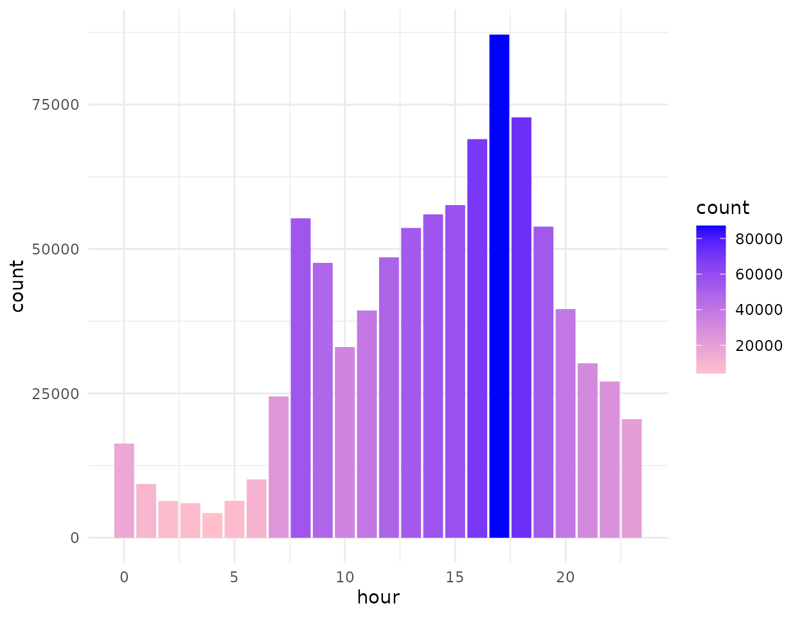
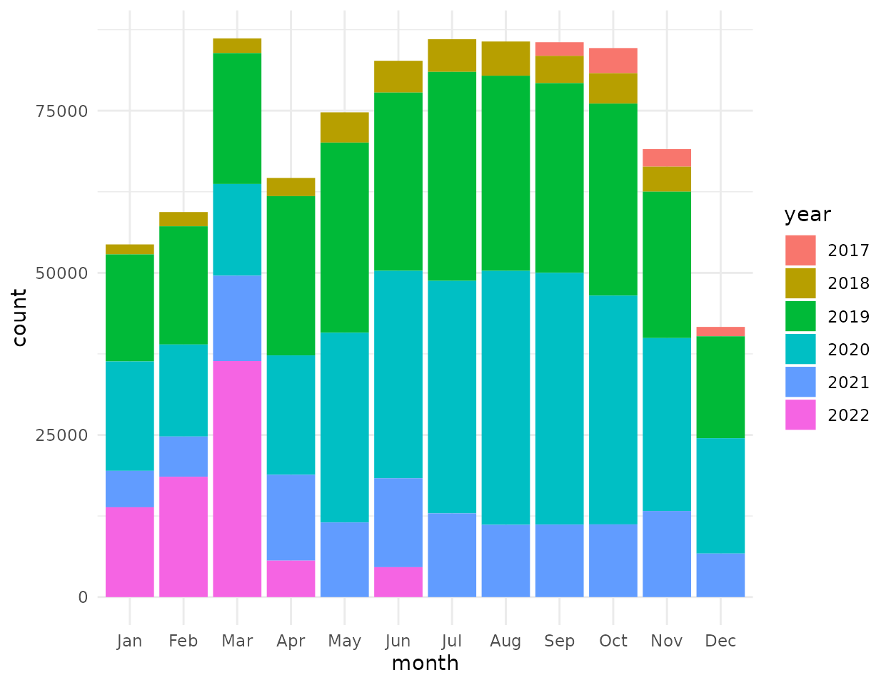

Riding a Bike
riding-a-bike.RmdDownload Glasgow bike hire data and visualise.
library(opendatascotland)
library(sf)
library(tidyverse)
library(ggmap)
library(hms)
library(lubridate)Confirm licence
# Search and download
metadata <- search_ods(search = "Next Bike Cycle Hire - Glasgow")
metadata$licence
>> [1] "UK Open Government Licence"Download
#> Warning: One or more parsing issues, see `problems()` for detailsdata <- get_ods(metadata)Tidy data
# Data is returned as a list, extract single list item into a data frame
trips <- trips$`Next_Bike_Cycle_Hire_-_Glasgow_Trip_Data__2017-2022__Cycling_Scotland`
# Clean out weird points:
# hist(trips$`START LAT`)
trips <- trips %>% filter(!is.na(`START LAT`) &
`START LAT` < 55.9 &
`START LONG` < -4.0 &
`START LONG` > -5.0 &
!is.na(`Start time`) )Average start time over 24hrs
Looks as expected: Peaks in morning rush hours 7.30-9.30 and evening around 6pm. Quiet at 4am.
# Convert date character to 'proper' date type
trips$start_time_day <- dmy_hm(trips$`Start time`)
# Start time of day (hour)
trips$hour <- hour(trips$start_time_day)
# hist(trips$start_time_day)
# ggplot bar chart
hour_plot <- trips %>%
ggplot(aes(x = hour)) +
geom_bar(aes(fill = ..count..)) +
scale_fill_gradient(low = "pink", high = "blue") +
theme_minimal()
hour_plot
Annual monthly usage
Significant usage in winter. But almost a doubling of usage in summer months.

Map trip start points
Background map data from OpenStreetMap.
# Convert data frame into 'sf' geospatial dataframe
trips <- st_as_sf(trips, coords = c("START LONG", "START LAT"))
# Bounding box for background map
bbox <- map_dbl(st_bbox(trips), 1)
names(bbox) <- c("left", "bottom", "right", "top")
# Download background map using bounding box
map <- suppressMessages(ggmap(get_stamenmap(bbox, zoom = 11)))
# Plot background with trips start points on top
cycle_map <- map + geom_point(
data = trips,
aes(
x = unlist(map(geometry, 1)),
y = unlist(map(geometry, 2))
),
colour = "green",
pch = 16,
alpha = 0.4
) +
theme_minimal() +
theme(
axis.title = element_blank(),
axis.text = element_blank()
)
cycle_map